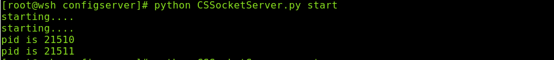
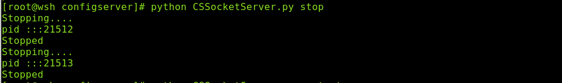
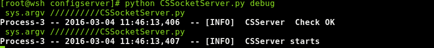

1 软件简介
这是一个类似nagios的服务器架构，有多节点(nodeserver)和一个配置服务器(CSServer),以及一个用户UI(wshflask)组成。
2 系统需求：
| 组件 | 需求 | 简介 |
|---|---|---|
| 系统 | linux | |
| python | python2 且版本为python2.7 | 目前能够保证在python2.6.6 和python2.7下正常运行 |
| expect | linux系统软件 | 可以通过 "yum install expect " 进行安装 |
2.1 wshflask需求环境
依赖软件:
sda
3 命令介绍
3.1 CSserver/NDserver
3.1.1 启动方式
1. CSSSocketerver启动命令 python CSSocketServer.py debug/start/restart/stop 2. NDSocketServer启动命令 python NDSocketServer.py debug/start/restart/stop
3.1.2 效果展示
- start命令

- stop命令

- restart命令
- debug命令

3.2 wshflask
3.2.1 启动方式
3.2.2 效果展示
{kind=link}
{kind=link}
{kind=link}
5 功能讲解
5.1 通用和基础功能
5.1.1 服务器架构方面
- 服务器主程序——NDSocketServer.py 和CSSocketServer.py
服务端使用的是系统自带的SocketServer模块进行书写，利用StreamRequestHandler作为基本的socket请求。利用 SocketServer.ThreadingMixIn 作为异步通信使用，然后使用自己改写的daemon作为守护进行使用。
对于外部的socket请求。服务端的处理过程：
- 密码验证，本程序使用的是md5加密，也是最简单的加密方式。
- 命令接收，然后交给后端的dataanalyse进行命令分析
- 命令分析——dataanalyse.py
这个模块的处理很简单, 判断是否有命令，然后将参数传递给对于的处理模块。
在实现上，先将函数和命令做一个字典映射。
dictname = {'findbydb':CSsqliteconsole.findbydb, 'findbyip':CSsqliteconsole.findbyip, 'update':CSsqliteconsole.update, 'delete':CSsqliteconsole.deletebydb, 'add': CSsqliteconsole.add }下一步将从socket服务端接收的命令拆分，知道对应命令，然后将参数进行传递
if handlecmd in dictname.keys(): return dictname[handlecmd](alist[1:]) elif handlecmd == 'help' : return usage() else: return [False , "You should use the right command"]
5.1.2 libbase
- 日志记录——CSLogging.py
利用的是系统的logging模块，目前实现的功能有：
- 实现了两种类型的日志记录：filehandler 和streamhandler，
- 日志级别的控制，可以自定义filehandler和streamhandler的记录级别，已经配置在config.cfg中。
- 日志轮询
- streamhandler的级别颜色控制，这个可以作为debug的时候的显示
外部调用使用的write_logger函数，函数形式是：
write_logger(level ,astr)
目前分类的级别是：
exception > critical > error > warning > info > debug
- 守护进程——daemon.py
查看网上的国外一个大神的代码，对于其中的部分进行了更改，对于服务端进行了包装。有三个命令选项 start/stop/restart 。因为自己的CSLogging 有一个streamhandler，所以增加了一个debug模式。
- 加密模块——encrypt.py
单纯的md5加密，每天一换。
- 本地配置模块——mod_config.py
利用系统自带的ConfigParser模块。来获取配置参数。
- 获取配置服务器客户端——getConfigClient.py
是一个socket客户端，获取服务端的数据
6 业务功能
6.1 CSServer 功能讲解
6.1.1 数据库连接模块——CSsqlite.py
对于数据库连接的二次包装，实现了增删改查。
6.1.2 命令处理——CSsqliteconsole.py
实现了dataanalyse和CSsqlite的命令转换。感觉不太彻底。以后改进。
{kind=link}
6.3 webclient 功能讲解
7 api 函数使用
请参考